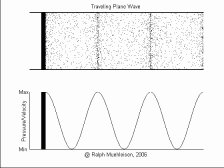
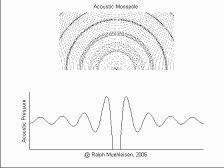
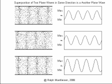
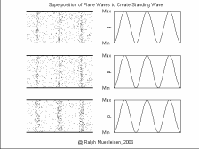

Simple Wave Animations
Click on a figure below to see the animation and a short description.
On IE7 select Tools -> Internet Options -> Advanced -> Multimedia -> Play Animations in Web Pages
On Firefox go to URL "about:config" and set "image.animation_mode" to "normal"
Traveling Plane Wave |
Simple Spherical Wave |
Superposition |
Standing Wave |
These animations were generated using MATLAB and saved as AVI files. The AVI files were converted to animated GIF files using the Ulead Gif Animator software. The MATLAB code is original, but based upon Mathematica animations developed by
Dan Russell and Vic Sparrow.
These animations, auralizations, and visualizations are © 2006 by
Ralph T. Muehleisen and are licenced under
a Creative Commons Attribution-NonCommercial 2.5 License.